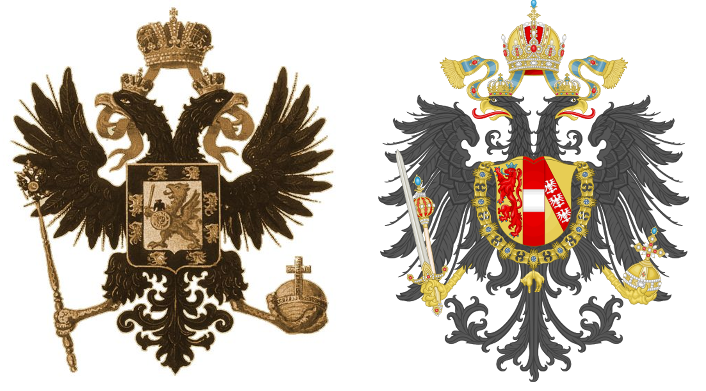
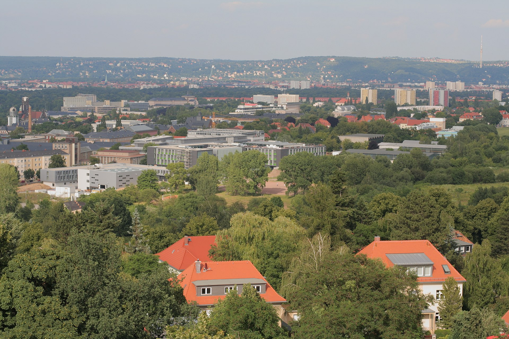
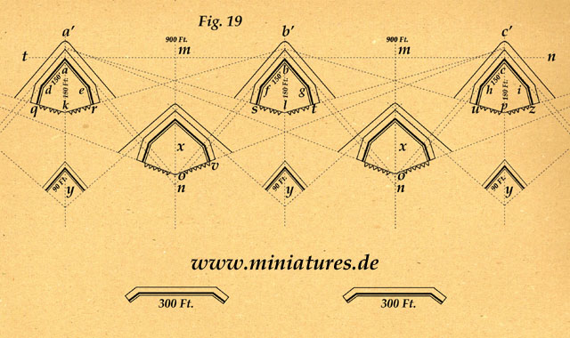
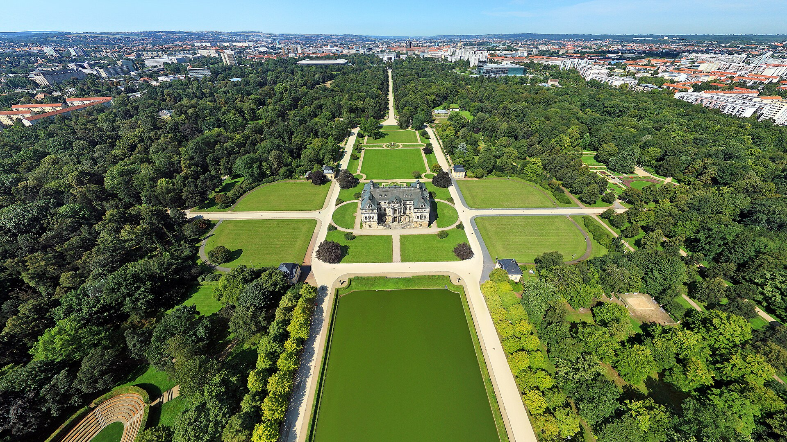
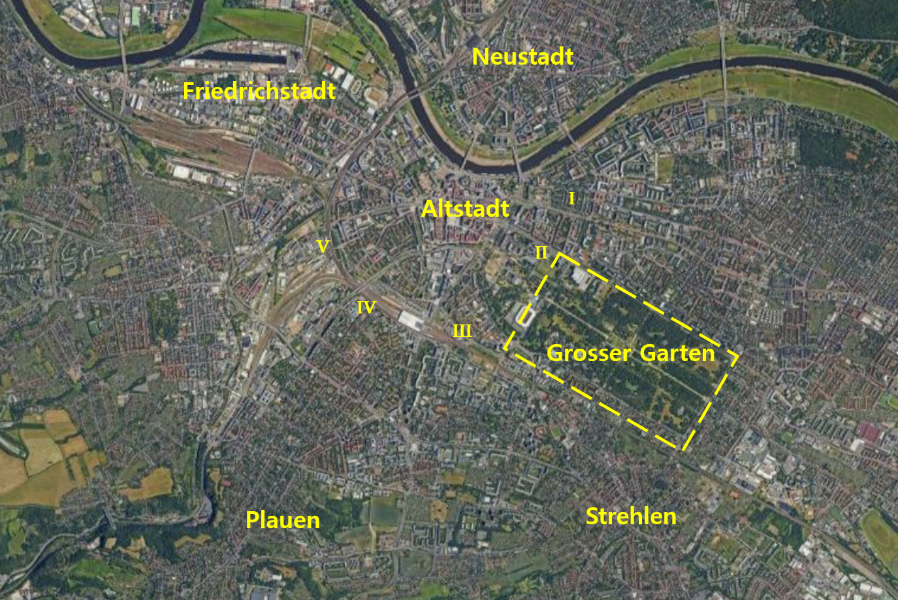
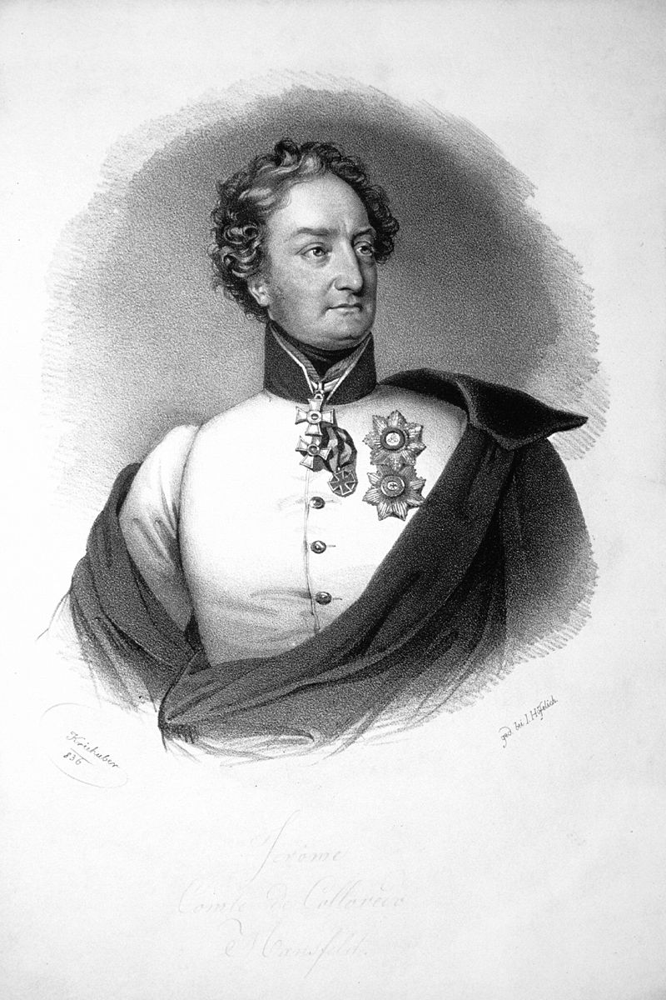

드레스덴 전투 (5) - 돌다리도 두들겨 보고 건너자
게시: 2024-03-18T06:30:36+09:00
8월 25일 오후, 알렉산드르와 모로가 즉각 공격을 주장한 것에 대해 슈바르첸베르크는 반대했습니다. 이유는 아직 오스트리아군 상당수가 도착하지 않았고, 드레스덴의 방비 태세도 불분명하다는 것이었습니다. 무엇보다 나폴레옹의 현재 위치가 어디인지 아는 사람이 없었습니다. 하지만 명색이 오스트리아가 주도하는 보헤미아 방면군이 드레스덴을 점령하는데, 오스트리아군은 별로 없고 러시아군과 프로이센군만 승리의 영광을 차지한다면 오스트리아의 체면이 구겨질 것을 걱정했던 것도 분명히 반대 이유 중 하나였을 것입니다. 여러 국가들의 연합군이란 그래서 어렵습니다.

(독일권의 맹주 자리를 놓고 첨예하게 대립하던 프로테스탄트 왕국 프로이센과 가톨릭 제국 오스트리아의 갈등도 첨예했지만, 동방의 제국 러시아와 이름 자체가 동방의 왕국(Österreich)인 오스트리아의 경쟁은 훨씬 더 했습니다. 양국이 모두 황제가 다스리는 제국인데다, 둘 다 발칸 반도에 눈독을 들이고 있었기 때문이었습니다. 게다가 양국은 문장도 비슷하여 모두 쌍두 독수리를 썼습니다. 어느 쪽이 원조이고 어느 쪽이 짝퉁인가 하면 다들 오스트리아가 원조라고 생각하시겠습니다만, 실은 모두 짝퉁입니다. 원래 쌍두 독수리 문장은 12세기 경부터 신성로마제국과 비잔틴 제국에서 먼저 쓰기 시작하여, 자연스럽게 황제의 상징이 된 것입니다. 정확하게 말하자면, 로마노프 황실이 쌍두 독수리를 공식 채용한 것은 1472년 이반 3세부터라고 하고, 합스부르크는 1804년 신성로마제국을 해체하면서 공식적으로 오스트리아 황실의 문장으로 채용했습니다. 물론 그 이전에는 합스부르크가 곧 신성로마제국이었으니 합스부르크가 짝퉁이라고 할 수는 없습니다. 그림에서 왼쪽이 로마노프, 오른쪽이 합스부르크의 쌍두 독수리입니다.) 슈바르첸베르크의 신중론이 먹혀든 것에는 생시르의 대담성도 한몫 했습니다. 8월 24일 드레스덴 남쪽 외곽에 도착한 비트겐슈타인의 러시아군 선봉대가 의외로 별 활동을 하지 않고 있자, 25일 오전 생시르는 대담하게도 비트겐슈타인에 대해 공세로 밀고 나왔던 것입니다. 아직 주력부대가 도착하지 않았으므로 굳이 모험을 할 필요가 없었던 비트겐슈타인은 쉽게 물러났는데, 이렇게 프랑스군이 공세로 나오는 것을 보고 보헤미아 방면군은 혹시 프랑스군에게 뭔가 믿는 구석이 있는 것 아닌가 하는 혼란을 주었습니다. 보헤미아 방면군은 몰랐지만, 25일 당일 드레스덴에는 생시르의 제14군단 2만 명이 전부였고 나폴레옹과 그의 근위대는 아직 강행군으로 달려오고 있는 중이었습니다. 그리고 가장 많은 병력인 10만의 오스트리아군 중 상당수가 아직 도착하지 않았다고 하더라도 러시아군 6만과 프로이세군 3만은 이미 도착한 상태였으므로, 오스트리아군을 완전히 제외하더라도 슈바르첸베르크는 5대1의 수적 우세를 가지고 있었습니다. 아마 이때 알렉산드르, 아니 모로의 권고대로 공격했다면 드레스덴은 함락되었을 가능성이 크고, 그럴 경우 나폴레옹은 큰 낭패에 빠졌을 것입니다. 이렇게 8월 25일도 허송세월했지만, 결국 오스트리아군은 밤 늦게까지 꾸역꾸역 도착했습니다. 한심하게도 오스트리아군 중 3~4만 정도는 아직도 도착하지 않았습니다만, 이제 26일 새벽에는 오스트리아군도 6~7만의 병력을 확보했으므로 슈바르첸베르크도 더 이상 공격을 지체할 핑계거리는 없었습니다. 하지만 여기서 다시 연합군의 너무 많은 지휘관들의 너무 많은 의견이 일을 또 망칩니다. 어떻게 공격을 할지 많은 주장과 반박 등으로 25일 밤부터 26일 새벽까지 긴 토론이 이어진 뒤, 결국 먼저 새벽 일찍 탐색전을 시작하여 프랑스군의 방어 태세를 본 뒤, 오후에 본격적인 공세를 취하기로 합의가 되었습니다.

(드레스덴은 강변에 위치했으니 당연히 저지대이고, 남쪽과 북쪽은 상대적으로 약간 더 높은 지대였으므로 남쪽의 보헤미아 방면군 수뇌부들은 드레스덴 시내를 비교적 잘 관찰할 수 있었습니다. 이 사진은 드레스덴 남쪽의 플라우언(Plauen) 구역에 있는 30m짜리 피히테투름(Fichteturm, 피히테 타워)에서 북쪽의 드레스덴 쪽을 내려다 본 광경입니다. 이 피히테투름이라는 타워는 1813년 당시엔 없었습니다.)
공격이면 그냥 공격이지 탐색전은 또 무엇인가 싶겠습니다만, 이것도 전혀 이해가 안 가는 일은 아니었습니다. 나폴레옹 시대에는 드레스덴과 같은 대도시를 정면 공격하는 일이 매우 드물었습니다. 대개의 전투는 허허벌판에서 벌어졌거나, 아예 제대로 된 작은 규모의 요새에서 공성전을 펼쳤습니다. 그런데 드레스덴은 어정쩡한 방어 시설을 갖춘 대도시였으므로 뭘 어떻게 하는 것이 좋을지 다들 좀 감이 잡히지 않았던 것입니다. 또 만약 프랑스군의 방어가 정말 허술할 경우, 전투가 벌어지면 프랑스군이 더 버티지 않고 그냥 엘베강 우안으로 철수할지도 모르는 일이었습니다. 1809년 오스트리아 빈이 어설픈 방어전을 벌인 뒤에 나폴레옹에게 두 번째로 점령될 때의 기억이 생생했던 오스트리아인들에게는 그런 시나리오가 꽤 설득력 있었습니다. 이 시점에서 드레스덴의 방어시설에 대해 좀 더 자세히 볼 필요가 있습니다. 드레스덴은 원래 엘베강 좌안에 있는 도시였으나 우안으로도 확장되어 좌안의 구도심지 알트슈타트(Altstadt, 옛마을)와 더 작은 우안의 신시가지 노이슈타트(Neustadt, 신시가지)로 양분되어 있었습니다. 구도심지가 확장을 거듭하면서 알트슈타트를 둘러싼 중세 성벽은 이미 군데군데 철거된 상태였는데, 그래도 남은 성벽은 꽤 든든한 방어물이 될 수 있었습니다. 문제는 그렇게 철거된 성벽 너머로 500~600미터 정도 사방으로 뻗은 교외 주택단지들이었습니다. 이 건물들은 남은 성벽 위에서 프랑스군이 쏘아댈 사격으로부터 적군을 가려주는 은폐물 역할을 했던 것입니다. 특히 알트슈타트 서쪽으로는 프리드리히슈타트(Friedrichstadt)라는 구역이 더 길게 뻗어 있었습니다. 따라서 프랑스군의 방어선은 성벽이 될 수 없었고 그런 교외 주택단지들의 외곽에 설치되어야 했습니다. 휴전 기간 동안 프랑스군도 놀고만 있었던 것은 아니었습니다. 이미 뤼첸 전투 전에 연합군에게 드레스덴이 함락된 적이 있었으므로 프랑스군은 휴전 기간 중 드레스덴의 방어 시설을 보강했습니다. 즉, 드레스덴 외곽, 교외 주택단지들 너머에 대포를 설치한 보루를 총 13개 쌓고 드레스덴을 진주 목걸이처럼 빙 둘러싼 것입니다.

(당시 프랑스군이 쌓은 보루는 lunette라는 형태였습니다. 뤼네뜨라는 것은 프랑스어로 '작은 달'이라는 뜻으로서, 원래 문 위에 설치하는 반달형 장식물을 뜻하는 것이었습니다만, 군사 요새 용어에서는 저런 형태의 작은 보루를 말합니다. 규모는 각면의 길이가 30~40m 정도 되었는데, 대충 쌓는다고 되는 것이 아니라 상호간의 사각(死角)을 고려하여 여러 개의 뤼네뜨를 주의 깊게 연계하여 쌓아야 했습니다. 그래야 가령 2번 보루의 측면에 달라붙는 적군을 1번 보루와 3번 보루가 쏠 수 있었습니다.) 문제는 그 보루들의 위치였습니다. 그 보루를 쌓을 때만 해도 드레스덴에 적군이 실제로 잔뜩 몰려들거라고는 상상하지 못했고, 특히 적군이 오더라도 지난 4월 때처럼 동쪽에서 올 것이라고 생각했기 때문에, 13개 중 8개의 보루는 강 건너의 더 작은 노이슈타트를 둘러싸고 있었습니다. 더 큰 알트슈타트를 둘러싼 것은 고작 5개였습니다. 이번에 보헤미아 방면군이 쳐들어온 곳은 물론 엘베강 좌안인 알트슈타트였습니다. 게다가 그런 보루를 쌓을 때 공병 장교들도 '설마 이쪽으로 쳐들어오진 않겠지'라는 생각으로 대충 쌓았는지, 보루의 전술적 위치도 매우 부적절했습니다. 1번, 2번, 3번 보루는 상호간의 거리가 너무 멀어서 상호 지원이 불가능했습니다. 4번 보루는 그 앞의 지형이 좀 솟아있는데다 약 250 미터 앞에 큰 건물이 있어서 그쪽으로 쳐들어오는 적군에게 엄폐물을 제공했습니다. 그리고 드레스덴의 방어에 있어 매우 중요한 지형이 있었는데, 그건 아예 보루들 라인 밖에 있었습니다. 바로 그로서가르텐(Großer Garten, 글자 그대로 대정원, 영어로는 Grand Garden)이었습니다. 아름다운 숲과 산책로로 구성된 이 공원은 벽으로 둘러쌓였고 그 중앙에는 아담한 궁전 건물이 위치했으므로 꽤 중요한 방어 거점이었는데, 정작 이 공원은 5개의 보루로 연결된 방어선 바깥에 위치했습니다.

(그로서가르텐의 현재 모습입니다. 이 바로크 양식의 공원은 1676년 작센 선거후인 요한 게오르그 3세의 명으로 세워진 것인데, 당연히 왕족과 귀족들만을 위한 공원이었습니다. 그래서 1813년 드레스덴 전투 당시 장벽으로 둘러싸여 있었던 것입니다. 다행히 1814년부터는 공공에 개방되어 누구나 즐길 수 있는 공원이 되었습니다. 가운데 있는 작은 궁전은 Lustschloss(루스트슐로스, 즐거움의 궁전)이라고 불리는 형태의 건물로서, 골프장으로 치면 그늘집 정도에 해당하는 시설입니다.)

(현재의 항공사진에 당시 1번~5번 보루들의 추정 위치를 I~V의 로마숫자로 표시했습니다. 그로서가르텐의 크기는 길이 1900m, 폭이 950m 정도입니다. 슈트렐렌, 플라우언, 그리고 알트슈타트의 서쪽 엘베 강변에 위치한 프리드리히슈타트의 위치를 주목하십시요. 강이 좁아서 잘 보이지 않지만 프드리히슈타트와 알트슈타트의 사이에는 작은 지류인 바이서리츠(Weisseritz) 강이 흐르고 있습니다. 바이서리츠강은 평소에는 도보로도 쉽게 건널 수 있는 깊이지만, 비가 오면 다리를 통하지 않고는 건널 수 없을 정도의 장애물로 변했습니다.) 이렇게 부적절한 방어시설로 무려 20만 대군을 막아내야 했던 생시르는 난감하기 짝이 없었지만 그렇다고 손가락을 빨고 있지는 않았습니다. 그는 그 5개 보루를 1차 방어선으로 삼고, 이어서 교외 주택단지들 그 자체를 제2차 방어선으로 삼았습니다. 평원에서 주택단지로 들어오는 대로와 골목길들에 바리케이드를 설치하고, 평원에 접한 최외곽 주택들의 벽에는 총안을 뚫어 그 벽 뒤에서 사격을 할 수 있도록 조치가 이루어졌습니다. 그리고 군데군데 도로로 관통된 드레스덴의 옛성벽을 마지막 3차 방어선으로 삼았습니다. 이런 방어시설들을 드레스덴 남쪽 고지에서 내려다보며 면밀히 관측한 보헤미아 방면군 수뇌부들은 이날 아침 탐색 공격을 다음과 같이 총 5개 갈래로 진격하기로 결정했습니다. 1) 맨 우측은 비트겐슈타인의 러시아군이 엘베 강변과 그로서가르텐(Großer Garten, 대정원) 사이를 공격하여 프랑스군을 유인 2) 그 왼쪽으로 지텐(Hans Ernst Karl, Graf von Zieten)의 프로이센군이 그로서가르텐을 공격 3) 중앙에는 콜로레도(Hieronymus von Colloredo-Mansfeld)의 오스트리아군이 3번 보루를 공격 4) 그 왼쪽에는 차스텔러(Johann Gabriel Chasteler de Courcelles)의 오스트리아군이 플라우언(Plauen) 마을을 점령 5) 맨 왼쪽에서는 비안키(Bianchi)의 오스트리아군이 바이서리츠(Weisseritz) 강 서쪽에서 진격하여 엘베 강변의 프리드리히슈타트(Friedrichstadt) 마을을 점령

(3번 공격을 맡았던 오스트리아군의 콜로레도 백작입니다. 이 분은 당시 나이가 38세로서 나폴레옹보다 6세 연하였는데, 그 전의 주요 전장에서 활약했던 기록이 없어 뭐하시던 분인지 잘 모르겠습니다. 1813년 이후에도 별다른 활약은 없었습니다. 결국 오스트리아군은 여전히 오스트리아군으로서, 그냥 귀족가에서 태어났다는 이유만으로 중요 전투의 지휘권을 맡겼던 모양입니다.) 이 계획에 따르면 1번에서 3번까지의 공격은 모두 유인 공격이었습니다. 이 공격들을 먼저 시작하여 프랑스군의 예비대가 그 쪽으로 투입되도록 한 뒤, 4번과 5번의 공격을 성공시킨다는 것이 보헤미아 방면군의 목표였습니다. 바이서리츠강에 면한 알트슈타트 측면은 방어가 허술했는데, 바이서리츠는 사실 장애물이 되기에는 너무 적은 강이었으므로 그쪽을 점령하는 것이 드레스덴 전체를 위협하기에 가장 좋다고 판단되었기 때문이었습니다. 드디어 8월 26일 새벽 5시, 위 공격 중 2번인 지텐의 프로이센군이 그로서가르텐을 공격하면서 드레스덴 전투가 시작됩니다. Source : The Life of Napoleon Bonaparte, by William Milligan Sloane Napoleon and the Struggle for Germany, by Leggiere, Michael V With Napoleon's Guns by Colonel Jean-Nicolas-Auguste Noël https://warfarehistorynetwork.com/article/napoleons-last-great-victory-the-battle-of-dresden/ https://en.wikipedia.org/wiki/Battle_of_Dresden https://www.epoche-napoleon.net/werk/h/hoffmann01/erzaehlungen/die-vision-auf-dem-schlachtfelde-von-dresden.html http://www.historyofwar.org/articles/battles_dresden_26_aug.html https://en.wikipedia.org/wiki/Johann_Gabriel_Chasteler_de_Courcelles http://napoleonistyka.atspace.com/BATTLE_OF_DRESDEN.htm https://de.wikipedia.org/wiki/Gro%C3%9Fer_Garten_%28Dresden%29 https://en.wikipedia.org/wiki/Hieronymus_von_Colloredo-Mansfeld https://www.miniatures.de/lunette.html